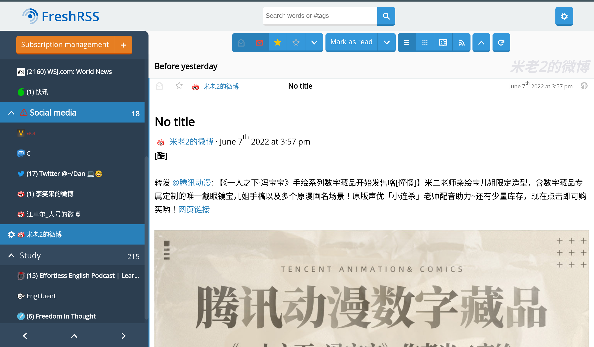

在如今信息泛滥的时代，我发现自己越来越被动地通过各种社交软件、短视频平台获取信息。 大部分社交网站的算法只提供读者喜好、能提高点击率的内容，同时大部分内容是浅薄而毫无营养的。自己也慢慢变成了像被投喂垃圾信息的“僵尸”。
也需要承认，某些平台上不乏一些有价值的内容，有些微信公众号会有一些高质量的文章，但是微信本身就会打断注意力，推送的时候平台也会经常带一些广告和私货。
如何改变这一现状，创造个人专属的信息源，获取有深度、有价值的信息？虽然自己早已了解 RSS，但最近我才开始使用 RSS 工具获取信息。 “聚合资讯订阅”（即 RSS feed )是通过 RSS 工具抓取各个网站内容进行阅读的一种订阅方式。通过 RSS 工具，我们可以将不同平台的各种信息聚合到一起，你可以自行收藏、保存。

rsshub.app是一个提供各平台 RSS 订阅源的网站，通过它我可以同时订阅不同网站、微博、公众号等各个平台的内容。
（2022-06-14: RSSHub 官网里的订阅源越来越多了，很棒！）
Feedly是全球知名的在线聚合订阅网站。不过使用一段时间之后，我换成了可以提供全文内容离线阅读的软件，这样我可以避免在线消息的打扰。自从搭建了自己的 RSS 网站之后，就没有再用其他软件和服务了。
（Feedly 无法在中国直接访问，RSSHub 似乎也不太稳定）
我订阅的都是比较深入的内容。这个时候我才发现我的跳跃式的阅读方式很难改变，已经不能在电子设备上很专注地阅读较长的文章了，现在需要做的是养成深入阅读的习惯。